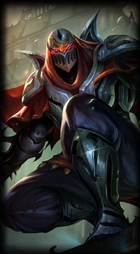
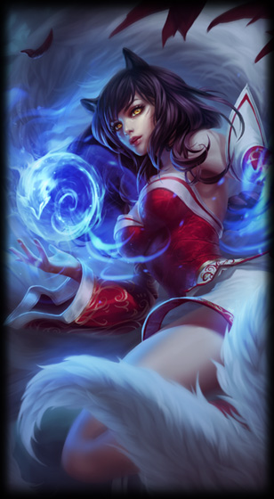
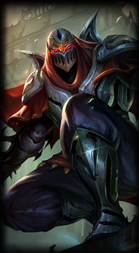
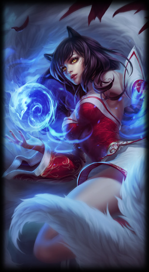

ProjectLOL
Der Mid-Laner
Der Mid-laner ist eine Rolle die auf der mittleren Lane auf der Karte gespielt wird. In der Mid-Lane werden meistens sehr starke AP/AD Champions gespielt, die den hauptsächlichen Schaden des Teams ausmachen. Die Ap-Champions sind meistens Magier die ihren hauptsächlichen Schaden aus ihren Fähigkeiten nehmen. AD-Champions dagegen sind meistens Assasins die in kurzer Zeit sehr viel Schaden verursachen.
Die Aufgaben eins Mid-Laners
- Farmen
- Den Gegner vom Farmen abhalten
- Die Lane pushen
- Gut in den Teamfights positionieren
- Viel Schaden in den Teamfights anrichten
Die drei stärksten Mid-Laner
 


